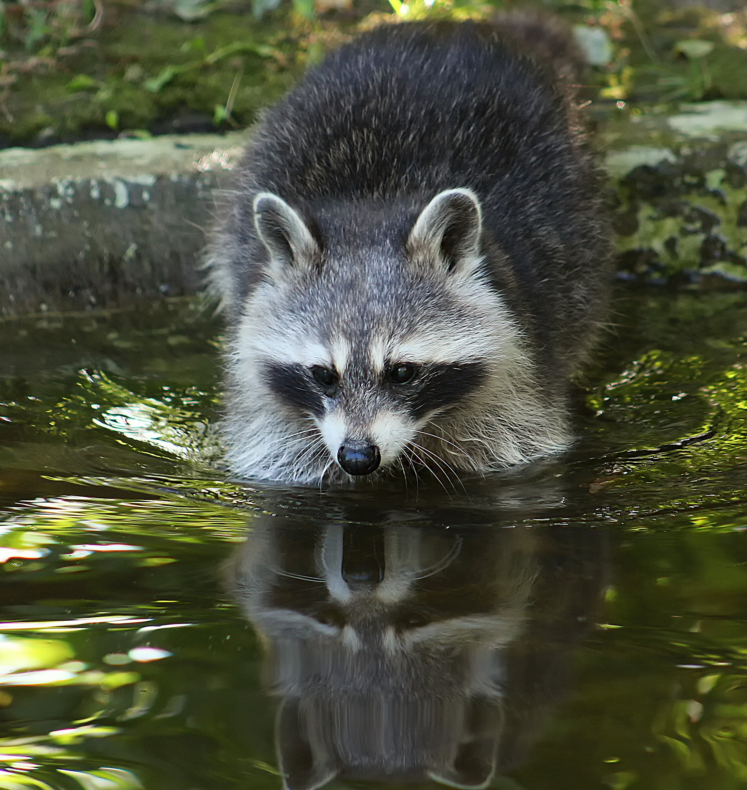

Ено́т-полоску́н, или америка́нский енот[1] (лат. Procyon lotor), — хищное млекопитающее рода еноты семейства енотовых. Один из немногих видов, которые процветают в условиях усиления антропогенного воздействия, выражающегося в постепенном окультуривании угодий[2]. Енот хорошо приживается в местах интродукции, хотя и является в целом теплолюбивым видом. На территории России вид хорошо освоил западные (причерноморские) и восточные (прикаспийские) регионы Северного Кавказа, где превратился в опасный инвазионный вид, угрожающий местной флоре и фауне[3]. B Беларуси хорошо прижился в Полесье. Енот легко приручается и подходит для разведения в неволе[4].
